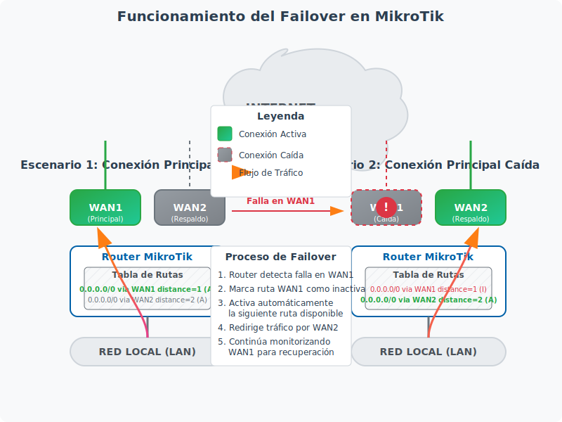

<section id="failover" class="mb-5">
    <div class="card">
        <div class="card-header bg-primary text-white">
            <h2 class="h4 mb-0">7. Configuración de Failover (Conmutación por error)</h2>
        </div>
        <div class="card-body">
            <div id="failover-teoria">
                <h3>7.1 Teoría y funcionamiento</h3>
                <p>El failover o conmutación por error es un mecanismo que permite a un router cambiar automáticamente a una conexión de respaldo cuando la conexión principal falla. A diferencia del balanceo de carga, donde el objetivo es distribuir el tráfico entre múltiples conexiones, el failover se centra en garantizar la continuidad del servicio.</p>
                
                <div class="note">
                    <strong>¿Qué es el Failover?</strong> Es un sistema de alta disponibilidad que permite que una conexión secundaria (o de respaldo) tome el control automáticamente cuando la conexión principal falla, minimizando así el tiempo de inactividad.
                </div>
                
                <p><strong>Ventajas del Failover:</strong></p>
                <ul>
                    <li>Garantiza la continuidad del servicio de Internet</li>
                    <li>Transición automática entre conexiones sin intervención manual</li>
                    <li>Ideal para entornos donde la disponibilidad es crítica</li>
                    <li>Puede combinarse con balanceo de carga para mayor flexibilidad</li>
                </ul>
                
                <p><strong>Funcionamiento del Failover en MikroTik:</strong></p>
                <p>RouterOS implementa el failover principalmente a través de dos mecanismos:</p>
                <ol>
                    <li><strong>Distancia de rutas</strong>: Asignando diferentes valores de distancia (métrica) a las rutas</li>
                    <li><strong>Comprobación de gateway</strong>: Monitorizando la disponibilidad de los gateways mediante pings u otros métodos</li>
                </ol>
                
                <p>Cuando la ruta principal (con menor distancia) deja de estar disponible, RouterOS automáticamente comienza a utilizar la siguiente ruta disponible con la menor distancia.</p>
                
                <div class="diagram-container">
                    
                    <p class="figure-caption">Figura 4: Funcionamiento del Failover en MikroTik</p>
                </div>
            </div>
            
            <div id="failover-configuracion" class="mt-5">
                <h3>7.2 Configuración paso a paso</h3>
                <p>A continuación, se presenta una guía paso a paso para configurar el failover en un router MikroTik. Este ejemplo asume que tenemos dos conexiones a Internet: una principal (WAN1) y una de respaldo (WAN2).</p>
                
                <div class="warning">
                    <strong>Importante:</strong> Antes de comenzar, asegúrate de tener acceso al router a través de otro medio (como consola) en caso de que pierdas conectividad durante la configuración.
                </div>
                
                <h4 class="mt-4">Paso 1: Identificar y configurar las interfaces</h4>
                <p>Al igual que en las configuraciones anteriores, primero identifica las interfaces que utilizarás:</p>
                
                <ul class="steps">
                    <li>
                        <strong>Identificar interfaces:</strong> Usa el siguiente comando para ver las interfaces disponibles:
                        <div class="command">/interface print</div>
                    </li>
                    <li>
                        <strong>Renombrar interfaces (opcional):</strong> Para mayor claridad, puedes renombrar las interfaces:
                        <div class="command">/interface set 0 name=WAN1
/interface set 1 name=WAN2
/interface set 2 name=LAN</div>
                    </li>
                </ul>
                
                <h4 class="mt-4">Paso 2: Configurar direcciones IP</h4>
                <p>Configura las direcciones IP para cada interfaz:</p>
                
                <div class="command"># Configurar WAN1 (ejemplo con DHCP)
/ip address add interface=WAN1 address=dhcp

# Configurar WAN2 (ejemplo con IP estática)
/ip address add interface=WAN2 address=192.168.2.2/24

# Configurar LAN
/ip address add interface=LAN address=192.168.0.1/24</div>
                
                <h4 class="mt-4">Paso 3: Configurar rutas con diferentes distancias</h4>
                <p>La clave del failover es configurar rutas con diferentes valores de distancia y habilitar la comprobación de gateway:</p>
                
                <div class="command"># Ruta principal (WAN1)
/ip route add dst-address=0.0.0.0/0 gateway=192.168.1.1 check-gateway=ping distance=1

# Ruta de respaldo (WAN2)
/ip route add dst-address=0.0.0.0/0 gateway=192.168.2.1 check-gateway=ping distance=2</div>
                
                <div class="note">
                    <strong>Nota:</strong> El parámetro <code>distance=1</code> para WAN1 indica que es la ruta preferida, mientras que <code>distance=2</code> para WAN2 indica que es la ruta de respaldo. El parámetro <code>check-gateway=ping</code> es crucial, ya que permite que RouterOS verifique si el gateway está disponible.
                </div>
                
                <h4 class="mt-4">Paso 4: Configurar NAT para ambas interfaces WAN</h4>
                <p>Configura el enmascaramiento (NAT) para permitir que los clientes de la red local accedan a Internet a través de ambas conexiones:</p>
                
                <div class="command"># NAT para WAN1
/ip firewall nat add chain=srcnat out-interface=WAN1 action=masquerade

# NAT para WAN2
/ip firewall nat add chain=srcnat out-interface=WAN2 action=masquerade</div>
                
                <h4 class="mt-4">Paso 5: Configurar monitorización avanzada (opcional)</h4>
                <p>Para una monitorización más avanzada, puedes utilizar el script de Netwatch para verificar la conectividad a Internet y cambiar automáticamente entre conexiones:</p>
                
                <div class="command"># Crear script para verificar WAN1 y cambiar a WAN2 si falla
/system script add name=check-wan1 source={
    :local pingTarget 8.8.8.8;
    :local pingCount 5;
    :local successThreshold 3;
    :local wan1Gateway [/ip route get [find dst-address=0.0.0.0/0 distance=1] gateway];
    :local wan2Gateway [/ip route get [find dst-address=0.0.0.0/0 distance=2] gateway];
    
    :local pingResult [/ping $pingTarget count=$pingCount interface=WAN1];
    
    :if ($pingResult < $successThreshold) do={
        :log warning "WAN1 connection failed. Switching to WAN2";
        /ip route set [find dst-address=0.0.0.0/0 gateway=$wan1Gateway] distance=10;
        /ip route set [find dst-address=0.0.0.0/0 gateway=$wan2Gateway] distance=1;
    }
}

# Crear script para verificar WAN2 y volver a WAN1 si está disponible
/system script add name=check-wan2 source={
    :local pingTarget 8.8.8.8;
    :local pingCount 5;
    :local successThreshold 3;
    :local wan1Gateway [/ip route get [find dst-address=0.0.0.0/0 distance=10] gateway];
    :local wan2Gateway [/ip route get [find dst-address=0.0.0.0/0 distance=1] gateway];
    
    :local pingResult [/ping $pingTarget count=$pingCount interface=WAN1];
    
    :if ($pingResult >= $successThreshold) do={
        :log info "WAN1 connection restored. Switching back from WAN2";
        /ip route set [find dst-address=0.0.0.0/0 gateway=$wan1Gateway] distance=1;
        /ip route set [find dst-address=0.0.0.0/0 gateway=$wan2Gateway] distance=2;
    }
}

# Configurar Netwatch para ejecutar los scripts periódicamente
/tool netwatch add host=8.8.8.8 interval=30s timeout=5s up-script=check-wan2 down-script=check-wan1</div>
                
                <p>Este script verifica la conectividad a 8.8.8.8 (servidor DNS de Google) a través de la interfaz WAN1. Si la conexión falla, cambia automáticamente a WAN2. Cuando WAN1 vuelve a estar disponible, el router vuelve a utilizarla como conexión principal.</p>
                
                <h4 class="mt-4">Paso 6: Configurar notificaciones (opcional)</h4>
                <p>Puedes configurar notificaciones para recibir alertas cuando se produzca un cambio de conexión:</p>
                
                <div class="command"># Configurar notificaciones por correo electrónico
/tool e-mail set server=smtp.tuproveedor.com from=router@tudominio.com

# Añadir script para enviar notificaciones
/system script add name=notify-failover source={
    :local subject "MikroTik Failover Alert";
    :local body "Failover event occurred. Switched from $1 to $2 at $[/system clock get date] $[/system clock get time]";
    /tool e-mail send to=admin@tudominio.com subject=$subject body=$body;
}</div>
                
                <p>Luego, modifica los scripts anteriores para incluir llamadas a este script de notificación cuando se produzca un cambio de conexión.</p>
            </div>
            
            <div id="failover-verificacion" class="mt-5">
                <h3>7.3 Verificación y pruebas</h3>
                <p>Una vez configurado el failover, es importante verificar que funciona correctamente:</p>
                
                <h4>Verificar las rutas configuradas</h4>
                <p>Para ver las rutas configuradas y su estado:</p>
                
                <div class="command">/ip route print</div>
                
                <p>Deberías ver ambas rutas por defecto con diferentes valores de distancia (1 para WAN1 y 2 para WAN2) y el estado "A" (activo) para la ruta principal.</p>
                
                <h4>Prueba de failover</h4>
                <p>Para probar que el failover funciona correctamente, puedes simular una falla en la conexión principal:</p>
                
                <ul class="steps">
                    <li>
                        <strong>Desconectar físicamente el cable de WAN1</strong> o deshabilitar la interfaz:
                        <div class="command">/interface disable WAN1</div>
                    </li>
                    <li>
                        <strong>Verificar que el tráfico se redirige automáticamente a WAN2:</strong>
                        <div class="command">/ip route print</div>
                    </li>
                    <li>
                        <strong>Realizar pruebas de ping para confirmar la conectividad:</strong>
                        <div class="command">/ping 8.8.8.8 count=5</div>
                    </li>
                    <li>
                        <strong>Volver a conectar o habilitar WAN1:</strong>
                        <div class="command">/interface enable WAN1</div>
                    </li>
                    <li>
                        <strong>Verificar que el tráfico vuelve a utilizar WAN1:</strong>
                        <div class="command">/ip route print</div>
                    </li>
                </ul>
                
                <h4>Monitorizar el estado de las conexiones</h4>
                <p>Puedes utilizar las siguientes herramientas para monitorizar el estado de las conexiones:</p>
                
                <div class="command"># Ver el estado de las interfaces
/interface monitor-status WAN1,WAN2

# Ver el registro del sistema para eventos de failover
/log print where topics~"script"

# Ver el estado de Netwatch (si lo has configurado)
/tool netwatch print</div>
                
                <div class="note">
                    <strong>Consejo:</strong> Para un monitoreo más visual, puedes utilizar The Dude, una herramienta de monitorización de red gratuita desarrollada por MikroTik, que te permite visualizar gráficamente el estado de tus conexiones.
                </div>
                
                <h4>Ajustes adicionales para mejorar el failover</h4>
                <ul>
                    <li><strong>Tiempo de detección:</strong> Ajusta los parámetros de <code>interval</code> y <code>timeout</code> en Netwatch para controlar la rapidez con la que se detecta una falla.</li>
                    <li><strong>Múltiples destinos de prueba:</strong> En lugar de verificar solo 8.8.8.8, considera añadir múltiples destinos de prueba (como 1.1.1.1 o los servidores de tu ISP) para evitar falsos positivos.</li>
                    <li><strong>Histéresis:</strong> Implementa un mecanismo de histéresis para evitar cambios frecuentes entre conexiones cuando una conexión es inestable.</li>
                </ul>
                
                <div class="warning">
                    <strong>Importante:</strong> Recuerda que durante el tiempo que tarda el router en detectar la falla y cambiar a la conexión de respaldo, puede haber una breve interrupción del servicio. Ajusta los parámetros de monitorización según tus necesidades de disponibilidad.
                </div>
            </div>
        </div>
    </div>
</section>